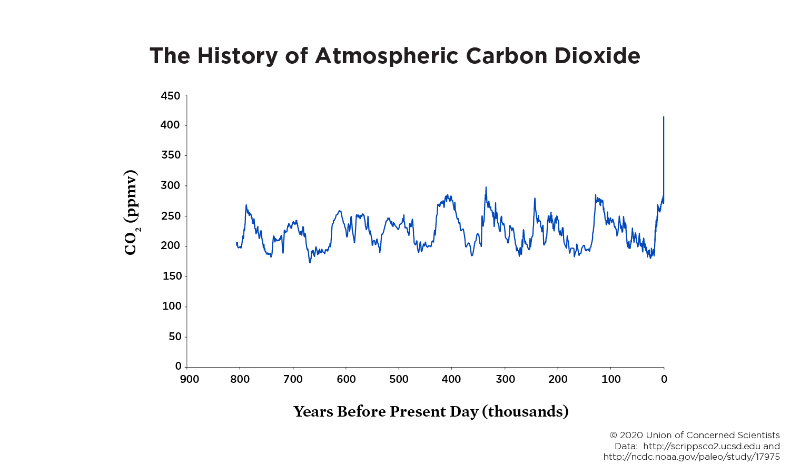
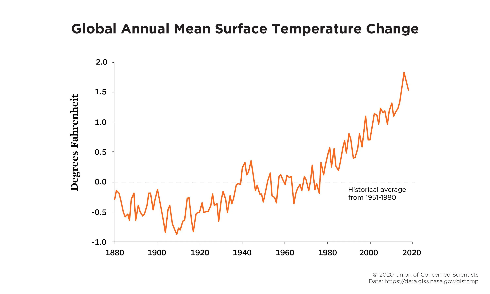

Climate Change
Climate change is a long-term shift in global or regional climate patterns. Often climate change refers specifically to the rise in global temperatures from the mid-20th century to present. Earth's climate has changed throughout history. There have been glacier advance and retreat, with the abrupt end of the last ice age about 11,700 years ago marking the beginning of the modern climate era. Most of these changes have had little impact on increase in temperature. But the warming we've seen over the past few decades is too rapid to be linked to changes in Earth's orbit and too large to be caused by solar activity.
Why is climate change happening? The main cause of climate change is the increase in greenhouse gases in the atmosphere. Greenhouse gases are gases that trap heat in the atmosphere. The main greenhouse gases are carbon dioxide, methane, nitrous oxide, and fluorinated gases. These gases are released into the atmosphere by human activities such as burning fossil fuels, deforestation, and agriculture. Humans impact the physical environment in many ways: overpopulation, pollution, burning fossil fuels, and deforestation. Changes like these have triggered climate change, soil erosion, poor air quality, and undrinkable water. These negative impacts can affect human behavior and can prompt mass migrations or battles over clean water. Air pollution caused ny humans is increasing the temperature in the atmosphere which in turn is causing global warming.
Global Warming
Global warming is the observed century-scale rise in the average temperature of the Earth's climate system and its related effects. Multiple lines of scientific evidence show that the climate system is warming. The largest human influence has been the emission of greenhouse gases such as carbon dioxide, methane, and nitrous oxide from the burning of fossil fuels, deforestation, and other land use changes. Global warming is a long-term rise in the average temperature of the Earth's climate system, an aspect of climate change shown by temperature measurements and by multiple effects of the warming. These include rising sea levels, changing precipitation patterns, and expansion of deserts in the subtropics. The term commonly refers to the mainly human-caused observed warming since the mid-20th century. Many of the observed changes since the 1950s are unprecedented in the instrumental temperature record, and in paleoclimate proxy data. The term "global warming" is sometimes used to refer specifically to the rise in global surface temperature, or in the related climate change.
How is global warming linked to extreme weather?
Scientists agree that the earth’s rising temperatures are fueling longer and hotter heat waves, more frequent droughts, heavier rainfall, and more powerful hurricanes. In 2015, for example, scientists concluded that a lengthy drought in California—the state’s worst water shortage in 1,200 years—had been intensified by 15 to 20 percent by global warming. They also said the odds of similar droughts happening in the future had roughly doubled over the past century. And in 2016, the National Academies of Science, Engineering, and Medicine announced that we can now confidently attribute some extreme weather events, like heat waves, droughts, and heavy precipitation, directly to climate change. The earth’s ocean temperatures are getting warmer, too—which means that tropical storms can pick up more energy. In other words, global warming has the ability to turn a category 3 storm into a more dangerous category 4 storm. In fact, scientists have found that the frequency of North Atlantic hurricanes has increased since the early 1980s, as has the number of storms that reach categories 4 and 5. The 2020 Atlantic hurricane season included a record-breaking 30 tropical storms, 6 major hurricanes, and 13 hurricanes altogether. With increased intensity come increased damage and death. The United States saw an unprecedented 22 weather and climate disasters that caused at least a billion dollars’ worth of damage in 2020, but 2017 was the costliest on record and among the deadliest as well: Taken together, that year's tropical storms (including Hurricanes Harvey, Irma, and Maria) caused nearly $300 billion in damage and led to more than 3,300 fatalities. The impacts of global warming are being felt everywhere. Extreme heat waves have caused tens of thousands of deaths around the world in recent years. And in an alarming sign of events to come, Antarctica has lost nearly four trillion metric tons of ice since the 1990s. The rate of loss could speed up if we keep burning fossil fuels at our current pace, some experts say, causing sea levels to rise several meters in the next 50 to 150 years and wreaking havoc on coastal communities worldwide.
Humans cause climate change. How do we know?
Scientists agree that global warming is caused mainly by human activity. Specifically, the evidence shows that certain heat-trapping gases, such as carbon dioxide, are warming the world—and that we release those gases when we burn fossil fuels like coal, oil, and gas. As scientific models and methods grow more sophisticated, and as we collect more data, our confidence in human-caused climate change only grows higher. Here’s what we know.
 Carbon dioxide (CO2) is the heat-trapping gas in our atmosphere responsible for most of the warming measured over the past several decades. It’s released during cement manufacturing and when coal, gas, and oil are burned—something humans started doing a great deal of during the Industrial Revolution through to today. The concentration of CO2 in the Earth’s atmosphere has increased dramatically over the last 150 years, from a pre-industrial era concentration of approximately 280 parts per million (ppm) to more than 410 ppm currently. CO2 concentration levels are unlikely to dip below these annual averages for hundreds of years. In fact, measurements from ancient ice cores show that CO2 is now at its highest levels in over 800,000 years.
What I intend to to with this project?
Why is there a drastic change in the climate now?
What are the main things impacting climate change?
How humans are responsible for it?
Can it be prevented?
How much damage can be prevented?
How can it be prevented?
What are the measures already being enforced to prevent climate change?
How effective are those methods?
What countries are being affected most by the climate change?
Why some countries are more affected than the others?
Finally, what can we do differently?